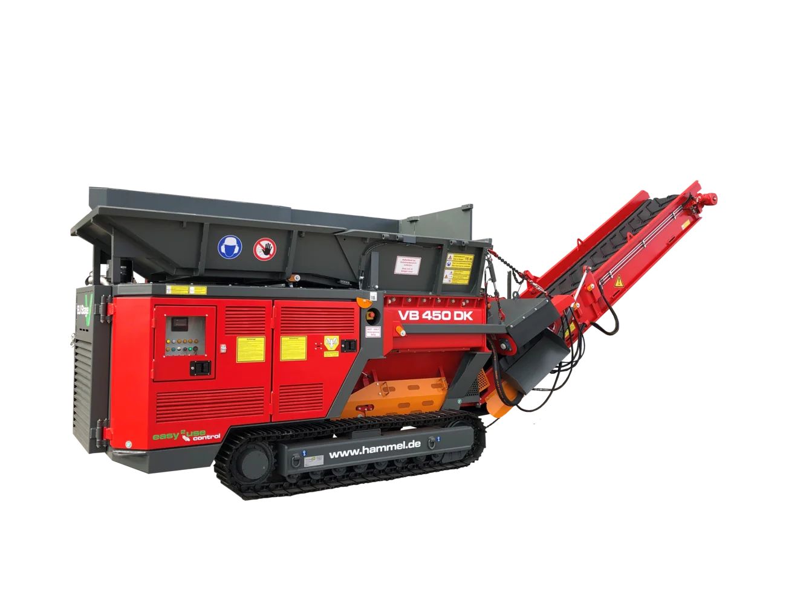
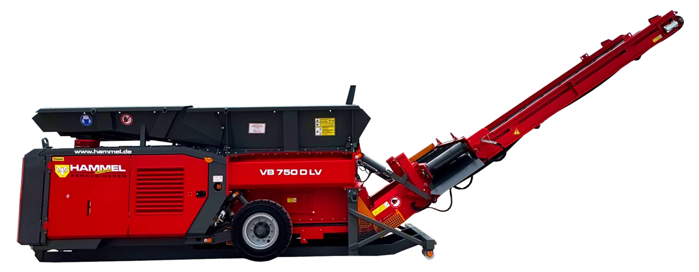
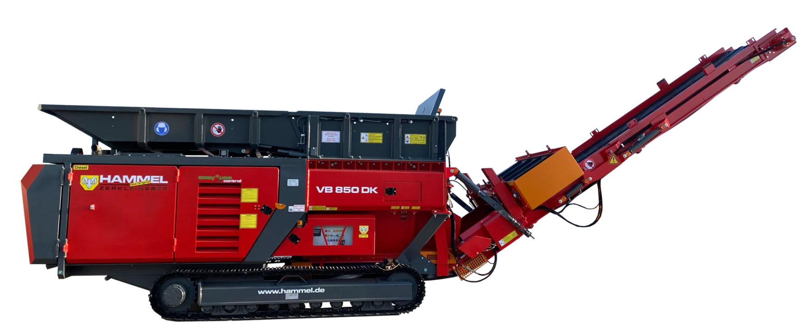

VB 450

Vorbrecher für Holz und Abfall
MEHR ERFAHRENJedes Material bringt seine eigenen Herausforderungen mit sich. Mit unseren leistungsstarken Maschinen und Anlagen für die Zerkleinerung, Siebung und Sortierung bieten wir die passende Technik für unterschiedlichste Aufgaben. Entdecken Sie unsere Produktvielfalt und finden Sie die Lösung, die zu Ihren Anforderungen passt.


Vorbrecher für Holz und Abfall
MEHR ERFAHRENVielseitiger Vorbrecher für Holz, Müll und weitere Materialien
MEHR ERFAHRENLeistungsstarker Vorbrecher mit mobilen und elektrischen Varianten
MEHR ERFAHREN
Robuste Zerkleinerung für Holz, Müll und Metall
MEHR ERFAHREN
760 PS in der DK-Ausführung für anspruchsvolle Anwendungen
MEHR ERFAHRENDer große mobile Vorbrecher
MEHR ERFAHRENNachzerkleinerung für definierte Endkörnungen
MEHR ERFAHRENTechnik für Trennung, Siebung und sortenreine Wertstoffe
MEHR ERFAHREN